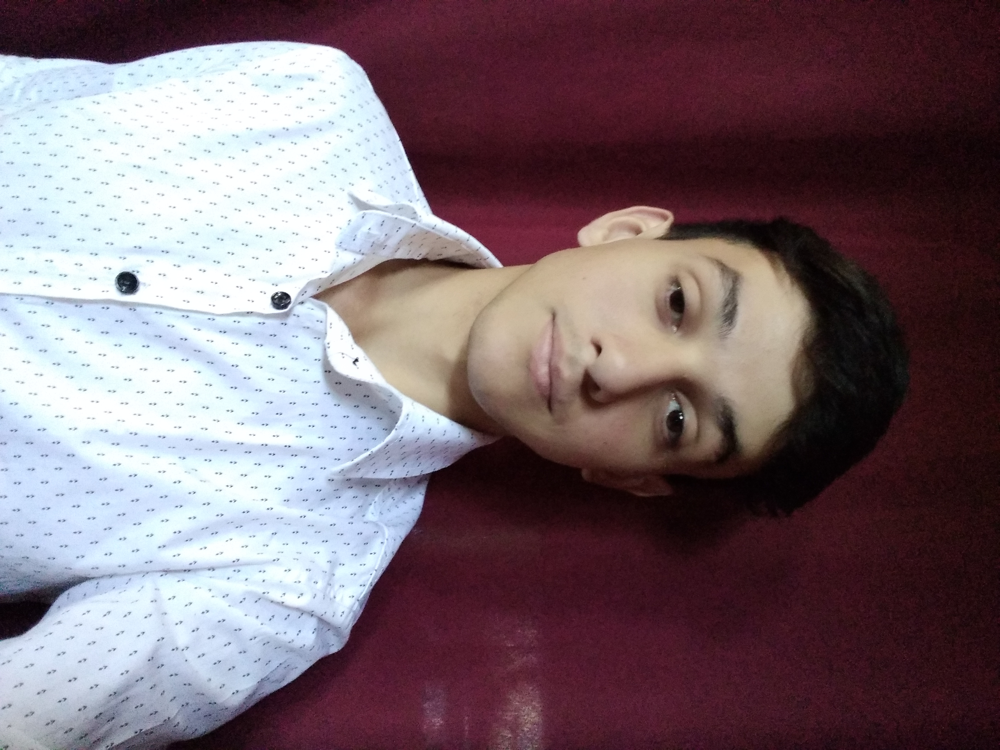

Bruno Joaquín Agustín Alonso
Fecha de nacimiento: 28 de Septiembre, 1999.
Dni: 42.095.989.
Nacionalidad: argentino.
Estado civil: soltero.
Dirección: Canalejas 700, Longchamps.
Tel: 15-3386-8972 / (011) 6380-0588.
Email: Alonso99.J@gmail.com.

Formación académica
Secundario: completo
Instituto San Luis Gonzaga.
Título: “Bachiller en Humanidades y Cs. Sociales” Año de egreso: 2017.
Universitario: en curso
Universidad Nacional de Lomas de Zamora.
Carrera: Licenciatura en Administración /
Tecnicatura en administración y gestión.
Año de ingreso: 2018.
Información personal
Estudiante que busca formarse cada día, destacarse y ampliar sus conocimientos.
De fácil trato, respetuoso, ordenado, amigable, cordial, comprometido, responsable, resolutivo y con confianza en sus aptitudes.
En cuanto a mi persona, soy un aficionado a la música, la lectura y al deporte.
¿Por qué Henry?
Debido a la actúal situación mundial, veo la excelente oportunidad de formarme como developer y Henry fue la primer opción. Llegué a conocerlos por mi círculo de amigos y por mi propio hermano.
Al tener gente relacionada al mundo de la informática, en el momento de comunicarles mi interés por convertirme en desarrollador fue la primer recomendación Henry, y aquí estoy, ansioso por aprender y superarme cada día.
A futuro, veo la posibilidad de conseguir trabajo y comenzar a profundizarme cada vez más en cuanto a conocimientos como desarrollador.